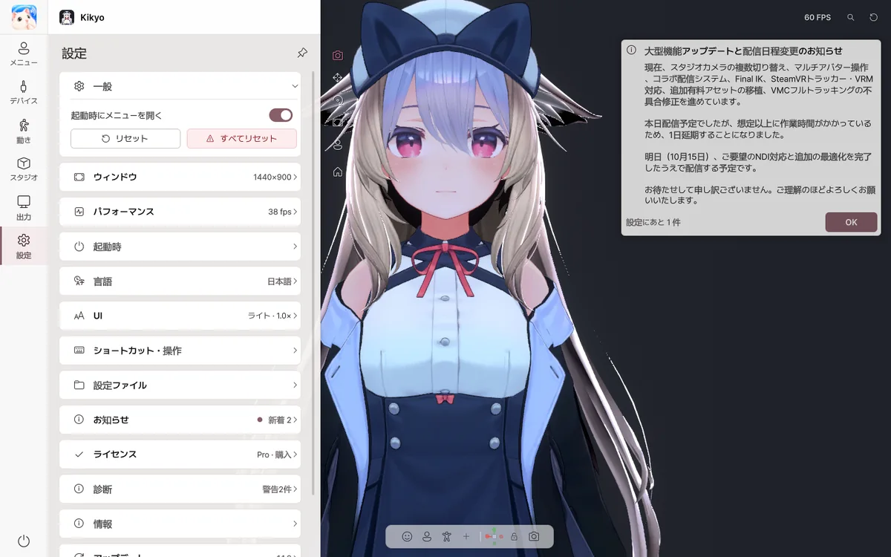

12. トラブルシューティング
v2.0.0：症状別の確認順序

| 症状 | 順番に確認すること |
|---|---|
| OBS に Spout2 Capture がない | OBS を閉じて公式 Spout2 プラグインを導入 → 再起動 → Spout2 Capture を追加。送信名を変更した場合は再選択します。 |
| OBS に NDI Source がない | DistroAVと必要な NDI Runtime を入れ、OBS を再起動。旧 OBS-NDI との競合を確認します。NDI は Basic 対応です。 |
| NDI 画面が黒い／見つからない | NDI スイッチ → PC 間通信 → ファイアウォール → NDI Tools Studio Monitor → ソース名とアルファ合成を確認。ゲスト Wi-Fi の隔離にも注意。 |
| Spout2 背景が黒い | スタジオで透明背景、アプリのアルファ出力、OBS のComposite with alphaなど受信オプションを確認。 |
| 仮想カメラのインストールが無反応 | 管理者権限が必要な場合があります。アプリ再起動 → VirtualCamera/Install.bat → Discord/Zoom 再起動 → Avatar Live Camera選択。 |
| 別の家からセッションに入れない | ホストのサーバー ON → 両者 v2.0.0 → 既定 47700 → TCP と UDP 両方の転送 → Windows ファイアウォール → グローバル WAN IP / CGNAT → 別回線で試験。 |
| 相手が代替アバターになる | 送信者のアバターデータ共有への同意と利用規約の許可を確認。合法的に保有する同一 VRM を Vrm フォルダーへ置いてもう一度探すを試します。 |
| スタジオカメラが不自然に回る | 対象の回転基準とレンズの向きを確認。「対象に固定」は顔を狙う設定ではありません。別に対象を直視／画面構図を選びます。 |
| iPhone は接続済みなのに顔が止まる | 有効な顔フレームから約 3 秒の補正を待ち、元アプリのトラッキング、AFK 設定と再接続を確認。 |
| Web カメラの腕がねじれる | 以前の方式と動的方式を比較し、実験的な手の奥行き推定をオフにして、スムージングを見直します。 |
| SteamVR トラッカー位置がずれる | SteamVR 自身のトラッキングを確認し、Avatar Live の体の割り当てと補正をやり直します。 |
| マルチビューや録画が重い | 追加 Spout2 送信、プレビュー更新頻度、ボリュームライト/HBAO、出力解像度/FPS を一つずつ減らします。 |
直らない場合は設定 → 診断 → エラーレポート送信に再現手順、使用機器、モデルとバージョン（v2.0.0/v45）、直前に変更した項目を記入してください。詳しくは出力・セッションも確認してください。
解決しないバグや問題は 設定 › 診断 › エラーレポートを送る から、欲しい機能や改善点は 設定 › 情報 › 改善の提案を送る からお知らせください。
起動・インストール
| 症状 | 対処法 |
|---|---|
| 「Windows によって PC が保護されました」画面 | 詳細情報 → 実行 |
| 「Avatar Liveのファイルが変更されています」 | BOOTH でダウンロードした元のファイルで再インストールしてください。アバターと設定はそのままです。 |
| うまく起動しない | Shift を押したまま起動して、セーフスタート |
アバター
| 症状 | 対処法 |
|---|---|
| 一部がピンク色になる | VRChat に正常にアップロードできるか確認してから、書き出し直す |
| アバターが見えない | ビューの何もない所をダブルクリック |
| ポーズが固まる、髪が絡まる | 上部の ⟲ |
| アバターの効果音が聞こえない | アバターの効果音は再生されません。 |
Web カメラ・顔
| 症状 | 対処法 |
|---|---|
| カメラがオンにならない | ほかのアプリがカメラを使っていないか確認 |
| 表情が小さすぎる、または大きすぎる | 自動フェイスセットアップ をやり直す、または 顔の調整 |
| アバターが横を向く | 正面補正 |
| ウインクできない | まばたきの方式を 独立 に |
| PC が重い | トラッキング品質を バランス か エコ に |
| 手・指が震える | デバイス › トラッキングソース › 手ぶれ補正 を上げる |
| アバターが動かない | デバイス › トラッキングソース で、部位のソースが使っていないデバイス（VMC など）になっていないか確認 |
| VMC で受け取ったポーズがずれる | VMC 設定 で Tポーズ または 合わせる |
マイク
| 症状 | 対処法 |
|---|---|
| 「信号なし」 | Windows の設定 › プライバシー › マイク で、デスクトップアプリを許可 |
| 雑音で口が動く | 背景ノイズを測定 |
| 口の動きが小さい | 音声キャリブレーション |
出力・画面共有
| 症状 | 対処法 |
|---|---|
| OBS に Spout2 ソースがない | OBS に Spout2 プラグインをインストール |
| OBS で背景が黒くなる | 背景を 透明 にして、OBS で Composite with alpha を選ぶ |
| Discord の一覧にない | 画面共有 をオンにしてから、アプリケーション タブを確認 |
| ゲームが黒く映る | ゲームをウィンドウモードに |
| 「Avatar Live Basic」の文字 | Basic のウォーターマークです。Pro では表示されません。 |
v1.1.5以降の問題と対処
| 症状 | 確認する場所 |
|---|---|
| 追跡が切れてもAFKポーズにならない | 動作 › 体の待機・移行時間と 待機ポーズ の指定 |
| iPhoneのウィンクの左右が逆 | v1.1.4以降へ更新し、ミラーを確認 |
| iPhone単独で腕がデスクへ戻らない | 動作 › 手・デスクと腕の追跡ソースを確認。全身追跡にはWebカメラかVMCが必要 |
| 手を前へ伸ばすと腕が揺れる | 実験的な手の奥行き推定をOFFにし、Webカメラを調整 |
| 設定が見つからない | 右上の虫眼鏡でAFK、ミラー、Spout2、言語を検索 |
| エラーの原因がわからない | 設定 › 診断 › エラーレポートを送るから再現手順とログを送信 |
対応範囲
| 内容 | |
|---|---|
| ✅ VRChat アバター | Expression メニュー、アニメーター、PhysBone、Contact、Constraint、Eye Look、LipSync |
| ✅ 制作ツール | NDMF・Modular Avatar・VRCFury を使ったアバター |
| ✅ シェーダー | Poiyomi、lilToon など |
| ✅ 顔 | アバターの設定に従う：VRCFaceTracking、ARKit の 52 個のシェイプキー（Perfect Sync）、MMD の目のモーフ |
| ✅ トラッキング | Web カメラ（顔・腕・手・指）、iPhone（iFacialMocap・FaceMotion3D）、VMC（部位ごと：腕・手・指・体・頭・目） |
| 🧪 試験的機能 | Ultraleap、OSC、VMC 出力、舌・頬のカメラ検出 |
| ⚠️ 非対応 | アバターの効果音、AudioLink、ミラー検出、VRM ファイル、Live2D、macOS・Linux |
Web カメラ（全身・指の関節を含む）、iPhone、VMC の入力は、実際の機器で確認済みです。試験的機能は正常に動作する見込みですが、まだ開発者の環境ですべてのデバイスとアプリでテストできていないため、アプリに 試験的 と表示しています。使ってみて問題があれば、エラーレポートを送る からお知らせください。
今後の対応予定
- VRM モデル（.vrm、VRM 0.x / 1.0）の読み込みと、.vrma アニメーションの再生
- パーフェクトシンクの強化：シェイプキーを直接割り当てるマッピング、Web カメラ・iPhone ごとの顔補正、52種類の表情をひとつずつ確認できるツール
- スマホの顔アプリの追加：VTube Studio（iPhone）、MeowFace（Android）
- 便利機能：アバターを書き出し直すと自動で再読み込み、何もしていないときの FPS 節約
※予定の機能と時期は、変更になる場合があります。
よくある質問
VRChat のアカウントは必要ですか？ 必要ありません。Avatar Live は VRChat と通信しません。
配信に使ってもいいですか？ 配信、動画の公開、商用利用には Pro をご利用ください。フレンドとの非公開の Discord 共有は、Basic でも行えます。
キーボード入力は記録されますか？ 記録されません。デスクでの手の動きは、入力した文字を保存・送信しません。
アバターファイルをほかの人に渡してもいいですか？ アバターや衣装の制作者の利用規約に従ってください。